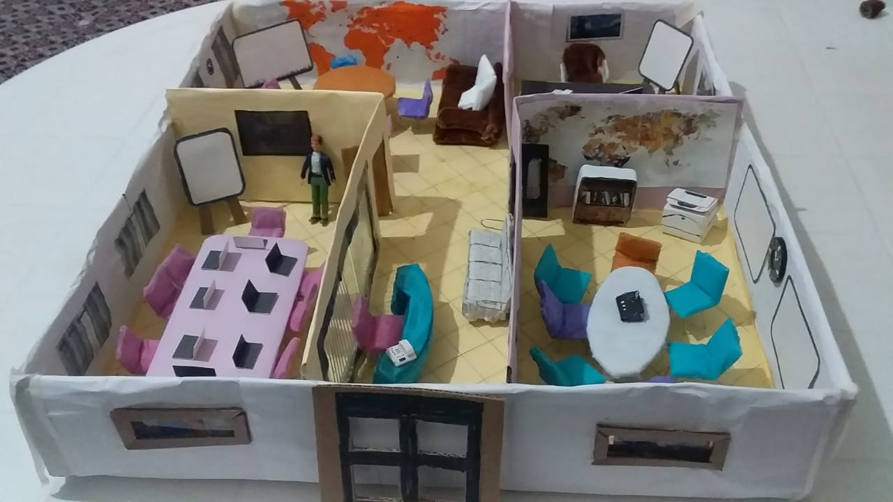

|  |
Aujourd'hui, l'orientation est parmi les grands problèmes des étudiants marocains, dans la majorité du temps, ces jeunes prennent de mal décidions affectant leurs parcours scolaires et académiques. De, là vient l'idée de My Coach, un centre d'orientation et de formation que propose à ses clients des formations modernes et innovantes : -Orienter les étudiant. |
|
L'arabe est notre langue maternelle, et cela fait partie de nos devoirs de la glorifier et l'honorer, pour cela. Dans cet événement l'année dernière, j'ai contribué avec une poésie sur la langue arabe, aussi j'ai participé à la compétition de la grammaire arabe où mon équipe était le gagnant, cette année-là, j'ai également participé à une pièce de théâtre qui porte le nom de la valeur de la réconciliation entre toutes les langues du monde. |
|
Nous avons participé avec My Coach à la compétition d'Injaz Al Maghrib où nous avons rivalisé d'autres équipes portant des projets innovants, mais My Coach a réussi à gagner le premier prix régional et assuré la qualification à la compétition nationale. L'expérience departiciper à cette compétition et la réalisation de My Coach durant toutes ces étapes était tellement riche des connaissances et des compétences qu'on ne pouvait jamais acquérir à l'école. |